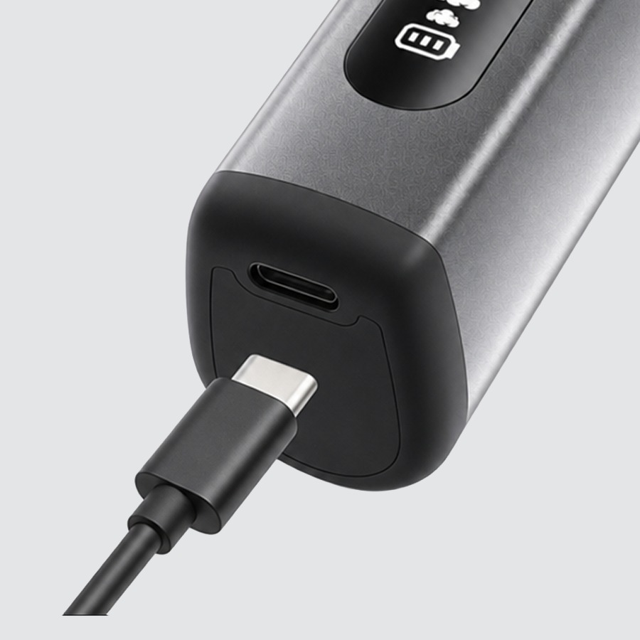
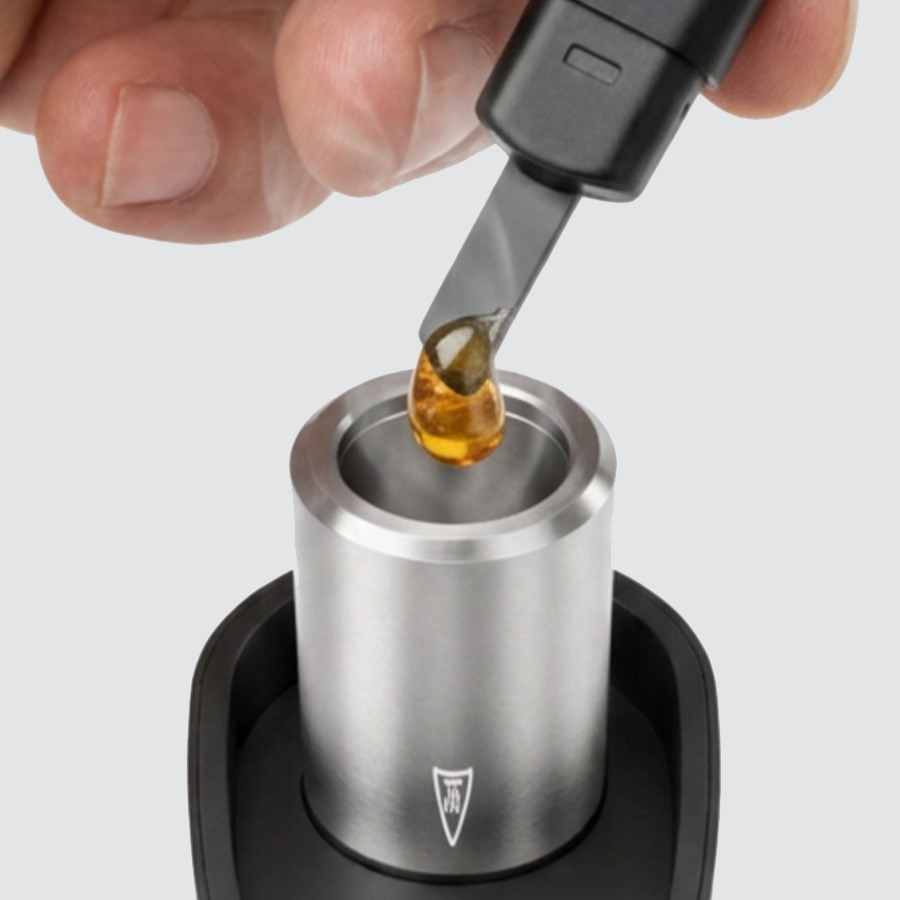
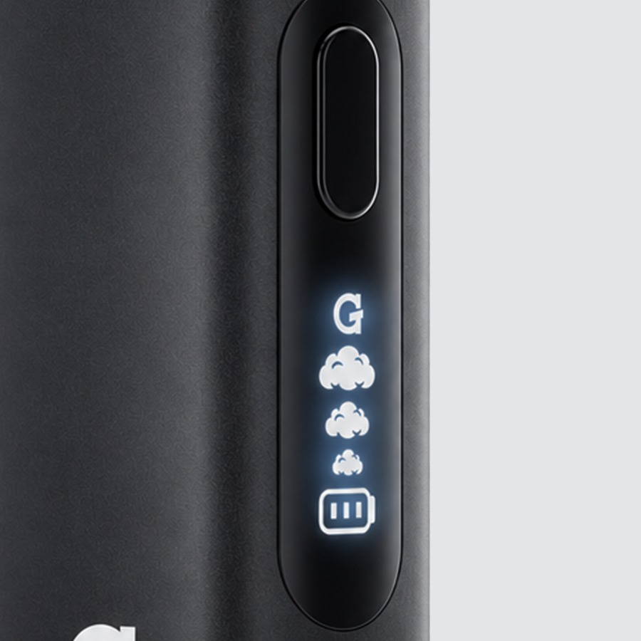
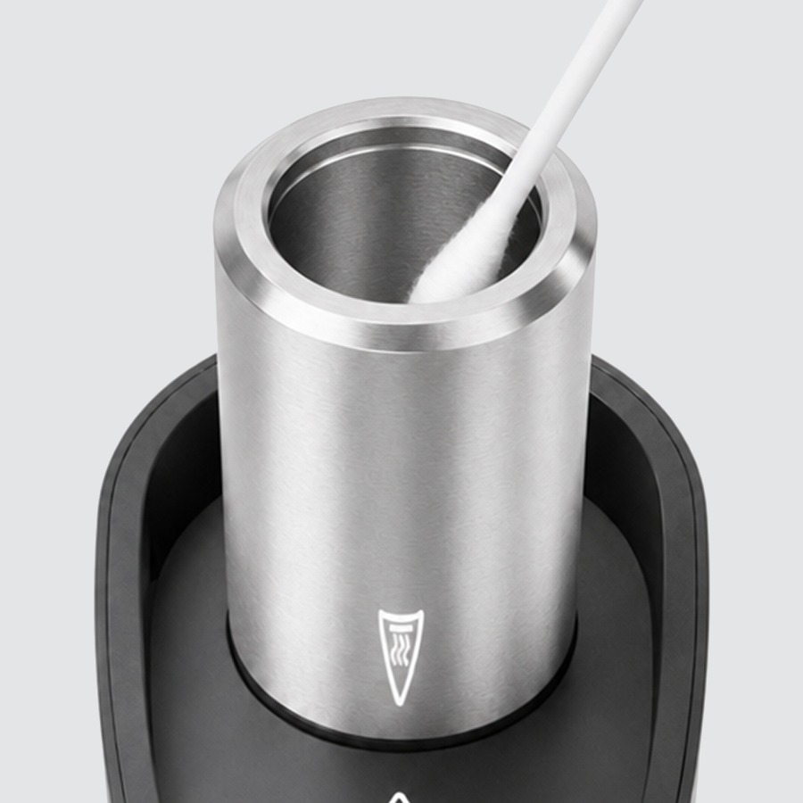
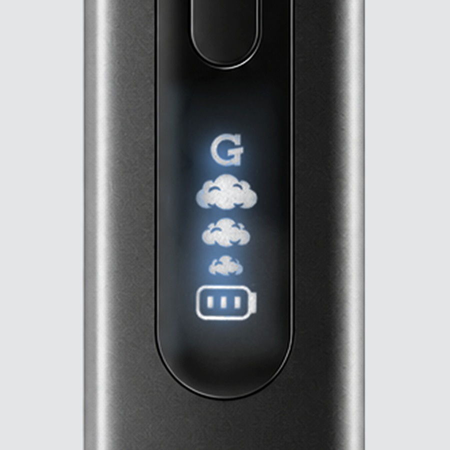
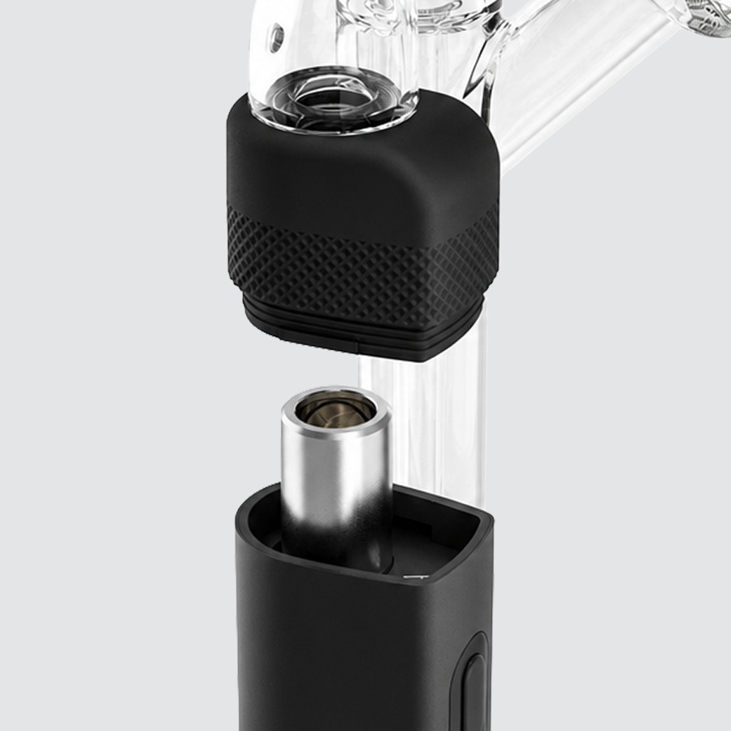
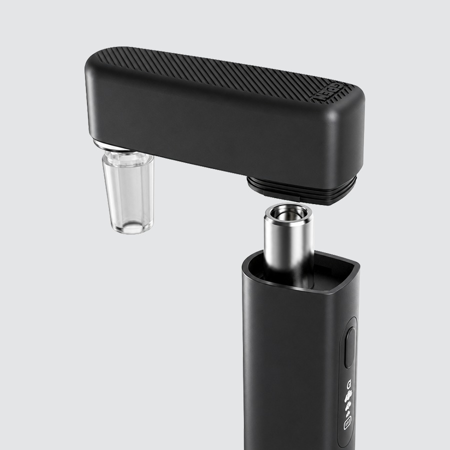

Using your
Micro II
-

1Charge
- Plug any USB-C cable into the port on the device.
- Give it a full charge before first use.
USB-C cable not included — use the one you already carry.
-

2Load
- Remove the mouthpiece to access the ceramic heating chamber.
- Load the chamber with your concentrate — do not overfill.
A small amount of concentrate goes a long way. Overfilling can clog the chamber and reduce airflow.
-

3Activate
5×Turn on Five quick presses3×Adjust temperature Cycles 296°F → 337°F → 394°F2×Start session mode Double-tap to begin timed session2×Cancel session mode Double-tap again to stop earlyholdManual heat Hold button to heat while you draw5×Turn off Auto shut-off after 5 minutesLower temperatures preserve flavor terpenes. Higher temperatures produce bigger, more intense vapor.
-

4Clean
- Allow the device to completely cool before cleaning.
- Use a cotton swab + isopropyl alcohol (IPA).
- Clean inside the ceramic heating chamber and the mouthpiece.
- Allow the device to completely dry before using again.
Never soak the battery in alcohol or any liquid.
-

5Alerts
- G logo flashing = No atomizer detected — check that the mouthpiece is fully seated.
- G logo flashing = Atomizer short circuit — remove and reattach the mouthpiece; contact support if it continues.
If the G logo flashes after reseating the mouthpiece, contact G Pen support for assistance.
Videos
Using Attachments
-

Side Car
Remove the mouthpiece and attach via the silicone adapter for a water-cooled draw.
-

Rig Adapter
Remove the mouthpiece and attach the rig adapter, then connect 14mm glass to a compatible glass rig.
Upgrades
Accessories & replacement parts for your Micro II.


Specs
View Product Details
| Type | Concentrate Vaporizer |
|---|---|
| Charging | USB-C |
| Heating element | Ceramic chamber |
| Temperature settings | 3 · 296°F / 337°F / 394°F |
| Session mode | Double-tap to start / cancel |
| Auto shut-off | 5 minutes |
| Compatible attachments | Side Car (silicone), Rig Adapter (14mm) |
Help
Common questions
Nothing happens when I press the button
Press the button five times quickly to turn the device on. The LED will light up when it is powered on. If it still doesn't respond, charge the device first.
Which temperature should I use?
Start at 296°F for the most flavorful, terpene-rich experience. Step up to 337°F for a balance of flavor and vapor. Use 394°F for maximum vapor production.
The G logo keeps flashing
A flashing G logo means either no atomizer is detected or there is an atomizer short circuit. Remove the mouthpiece completely, reattach it firmly, and try again. If it continues flashing, contact G Pen support.
How do I use the device with a glass rig?
Remove the mouthpiece from the Micro II and attach the Rig Adapter (sold separately). Connect 14mm glass to your compatible glass rig for water-cooled vapor.
How often should I clean the chamber?
Clean the ceramic heating chamber after every few sessions to maintain performance. Let the device cool fully, then use a cotton swab with IPA to wipe the chamber and mouthpiece, and dry completely before use.
What does the warranty cover?
The Micro II carries a limited warranty. Register your device and read the full terms on gpen.com, or contact support with your order details.